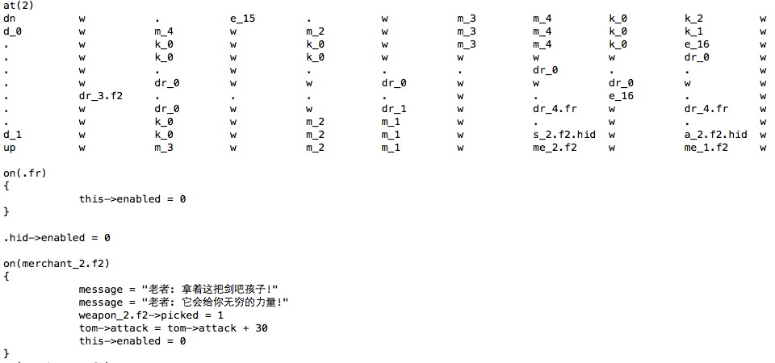

魔塔
MagicTower
重温儿时的经典
powered by QT 5.2.0
Created by 赵锦煦@JimmyZJX / 徐方舟@KevinXuxuxu
项目成果
- 原版地图
- 图形和小动画
- 集成全部音效
- 地图加载和存档
- 完备的轻量级地图编辑
- 扩展和改编
原版地图
自创脚本语言Map++(.m++)
原版地图写了1000多行
开发环境

- 基于QT 5.2.0的
QMainWindow(Core GUI)和QT多媒体库QMultiMedia环境，以及最新的C++11编译器 - 2D绘图、文字绘制均使用
QPainter，配合QTimer发送重画信号，形成动画 - 键盘输入可触发或相应游戏中的相关事件。该事件由继承了
QMainWindow的MainWindow类发出
面向对象
充分利用C++的面向对象特点
- 完全封装
- 继承的多态特性
- 构造函数的继承
保证了DRY (Don't Repeat Yourself), 避免低级错误
类结构
- 主界面:
MainWindow : QMainWindow - 辅助:
- Widget : QWidget
- Status : QWidget
- 画图:
MagicDisplayObject : MagicObject及派生类 - 动画:
MagicAnimate及派生类
类图

对象事件触发
virtual bool MagicDisplayObject::move(MagicMap *) = 0;
对象绘图方法
virtual void MagicDisplayObject::paint(QPainter *) = 0;
virtual void MagicAnimateObject::paint(QPainter *) = 0;
获取对象属性
对象的所有动态属性均在 QHash<QString, MagicVariant> MagicObject::property 中
virtual void MagicObject::setProperty(QString key, MagicVarient value)
{
property[key] = value;
}
劫持属性
void MagicDisplayObject::setProperty(QString propertyName, MagicVarient propertyValue)
{
if (propertyName == "position_x")
x = propertyValue.getInt() * 32;
if (propertyName == "position_y")
y = propertyValue.getInt() * 32;
MagicObject::setProperty(propertyName, propertyValue);
}
void MagicMap::setProperty(QString propertyName, MagicVarient propertyValue)
{
if (propertyName == "sound")
{
QSound::play(propertyValue.getString());
return;
}
else if (propertyName == "message")
{
appendAnimate(new MagicMessage(this, propertyValue.getString()), true);
return;
}
MagicObject::setProperty(propertyName, propertyValue);
}
多线程
- 多线程在
MagicTower中主要用于声音播放（合成）、界面重绘和键盘事件处理 - 多线程的好处在于，遇到需要阻塞的动画（比如小人行走），应保证不阻塞进程的消息队列线程。动态地添加线程去完成相应的任务，可以使程序正确处理线程阻塞，并且不引起程序假死
细节
在处理阻塞动画时，除了同步某些关键数据时采用了QMutex互斥锁和QReadWriteLock读写锁, MagicTower还采用了QWaitCondition处理消息: 当动画播放完成，即将删除MagicAnimate前，通知正在等待的线程。
MagicAnimate同时继承了QMutex和QWaitCondition类，方便单独管理阻塞。
脚本语言 Map++(.m++,.mh)
- 语法解释
- 元编程(Metaprogramming)
魔塔程序具有解释固定语法的文本地图文件的能力
C语言的基本运算符
+, -, *, /, %, ^, &, <<, >>, ~, =, <, <=, >, >=, ==, != ;
if 和 goto 语句
变量不用声明就可以使用
...
{
i = 0
:for_i
print = i // print为输出至控制台
i = i + 1
if (i <= 3)
goto for_i
}
对象的属性获取与设置
...
{
tom->health = 10000
emeny_3->attack = 300
}
对象选择功能 (仿CSS)
.hidden->enabled = 0
wall.hidden
#axe->pix = ":/images/axe"
对象事件触发
on (.fragile)
{
this->enabled = 0
}
on (.hard)
return = 0
on (wall.mistery)
message = "这堵墙看起来有机关……"
on (merchant_exp.floor5)
{
ret = input("You can use your extra exp to grow your power, please choose: ",
"1. 50 exp -> 10 attack", "2. 30 exp -> 7 defend",
"3. 100 exp -> {15 attack, 15 defend}", "4. Not this time.")
if (ret == 1)
if (tom->exp >= 50)
{
tom->exp = tom->exp - 50
tom->attack = tom->attack + 10
}
if (ret == 2)
if (tom->exp >= 30)
{
tom->exp = tom->exp - 30
tom->defend = tom->defend + 7
}
if (ret == 3)
if (tom->exp >= 100)
{
tom->exp = tom->exp - 100
tom->attack = tom->attack + 15
tom->defend = tom->defend + 15
}
}
输入整层地图
at (1)
up d_1 k_0 e_29 e_28 e_29 . . . . .
w w w w w w w w w w .
m_1.s . e_25 dr_0 . w m_1.m k_0 m_1.m w .
k_0 e_25 m_3.s w . w m_1.m k_0 m_1.m w .
w dr_0 w w . w w w e_26 w .
k_0 e_24 . w . dr_0 e_8 e_29 e_21 w .
m_4 . k_1 w . w w w w w .
w dr_0 w w . . . . . . .
. e_24 . w w dr_2 w w w dr_0 w
m_1.m m_2.b k_0 w k_2 d_0 . w k_0 e_23 k_1
m_1.m wi k_0 w . down . w k_0 k_0 k_0
MagicHelper
支持头文件(.mh)
#include fragile.mh
...
项目管理

用于代码托管，分支合并和版本控制

用于交流沟通
Thank you for attention!
感谢测试同学：捉哥，摸哥
感谢宿舍同学让我们熬了几个夜
Themes
Reveal.js comes with a few themes built in:
Default -
Sky -
Beige -
Simple -
Serif -
Night
Moon -
Simple -
Solarized
* Theme demos are loaded after the presentation which leads to flicker. In production you should load your theme in the <head> using a <link>.